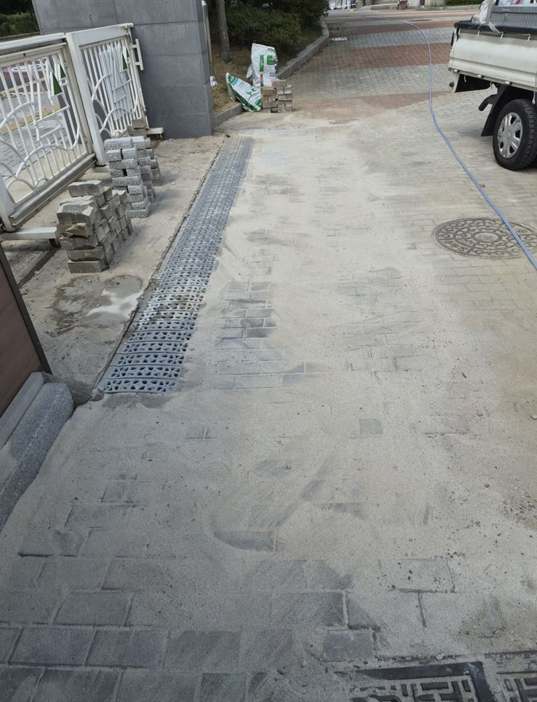
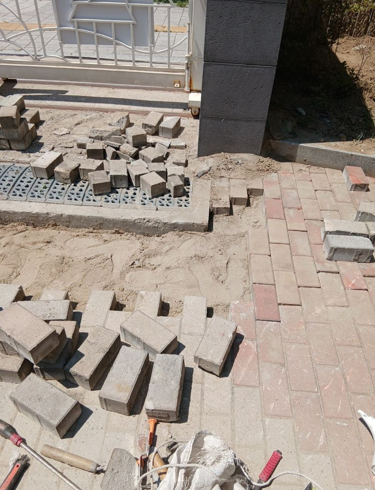
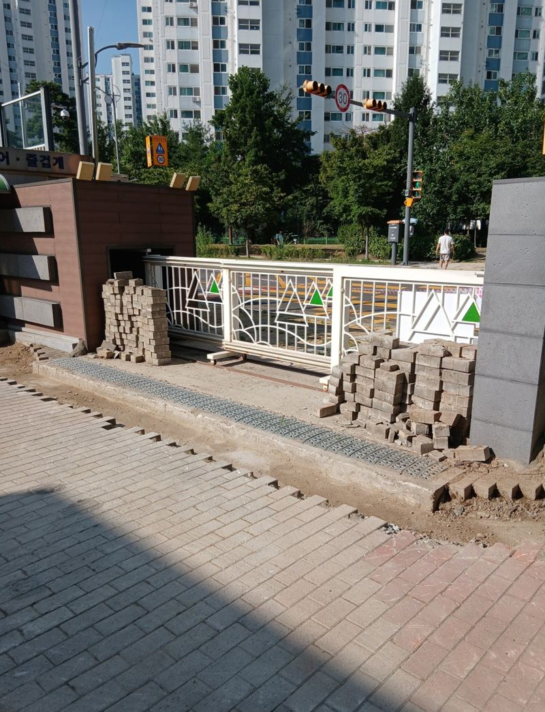
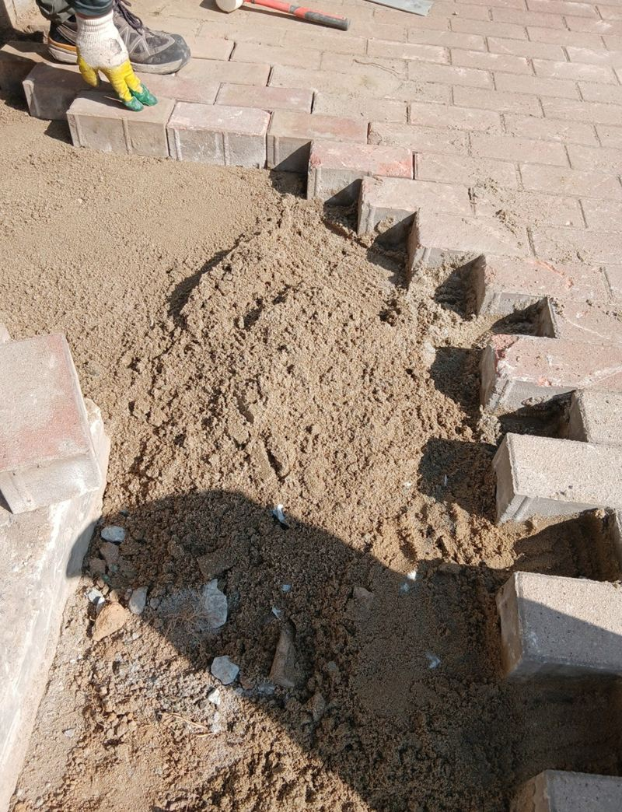
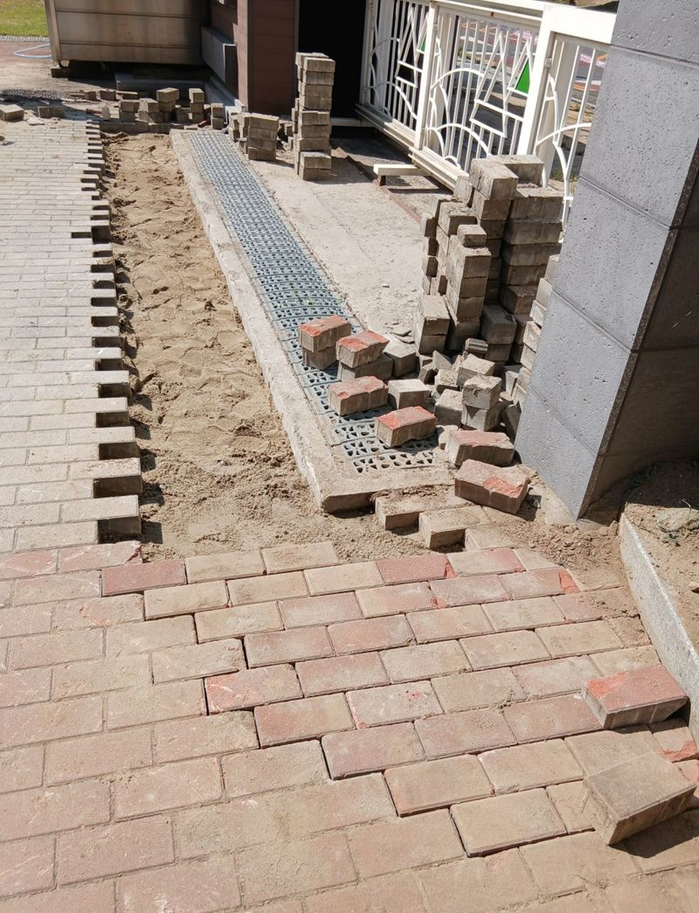
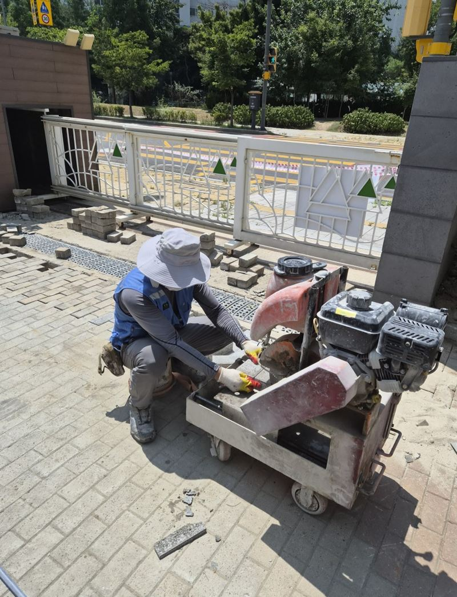
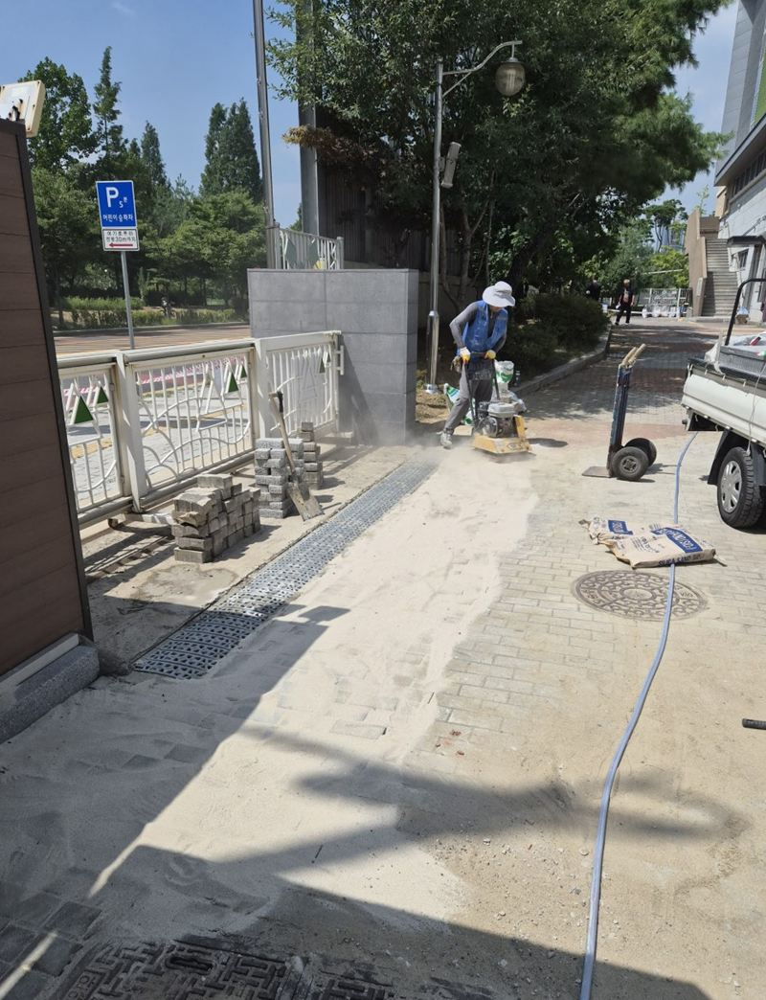

인천 미추홀 내려앉은 보도블럭 재시공 견적

 재시공 전재시공 후
재시공 전재시공 후← 밀어서 전후 비교 →
방학 동안 교문 앞 공사를 하느라 보도블럭을 걷어 낸 학교였어요. 원래는 걷은 블럭을 다시 깔 계획이었는데, 굴착기로 철거하면서 깨진 블럭이 많았어요. 학교 측 요청은 "개학 전까지 아이들이 안전하게 다닐 수 있게"였어요. 쓸 수 있는 블럭은 살리고, 부족한 만큼 같은 규격으로 새로 구해 다시 깔았어요.
| 현장 | 인천 미추홀구 초등학교 교문 앞 보행로 |
|---|---|
| 상황 | 교문 공사로 보도블럭 철거, 굴착기 작업으로 블럭 상당수 파손 |
| 한 일 | 잔재 정리 → 모래·자갈 보강 → 콤팩터 평탄화 → 블럭 시공 → 틈새 모래 충전 |
| 기한 | 개학 전 마무리 |
걷은 블럭, 다시 쓸 수 있을까
손으로 하나씩 걷은 블럭은 대부분 다시 쓸 수 있어요. 하지만 장비로 한꺼번에 떠낸 블럭은 모서리가 깨지거나 금이 간 게 많아요. 깨진 블럭을 섞어 깔면 그 자리부터 흔들리고 부서져서, 상태 좋은 것만 골라 쓰고 나머지는 근처 자재상에서 같은 규격으로 맞췄어요.


평탄화가 반이에요
블럭이 내려앉는 이유는 대부분 아래 바닥이 고르지 않아서예요. 모래와 자갈을 넉넉히 보강하고 콤팩터로 여러 번 다져 바닥 높이를 맞췄어요. 그 위에 블럭을 줄 맞춰 깔고, 경계 부분은 크기에 맞게 잘라 끼웠어요.




마지막으로 블럭 틈에 고운 모래를 쓸어 넣어 서로 꽉 물리게 하고, 주변을 정리했어요.
보도블럭 재시공 견적이 달라지는 것
| 항목 | 영향 |
|---|---|
| 면적 | 깔 블럭 양과 작업 시간 |
| 기존 블럭 재사용률 | 새로 사야 할 블럭 양 |
| 블럭 규격·색·기능 | 미끄럼 방지 제품은 단가가 달라요 |
| 바닥 보강량 | 꺼진 정도에 따라 모래·자갈이 더 들어가요 |
이런 보도블럭은 다시 까는 게 나아요
- 밟으면 블럭이 덜컹거려요아래가 비었거나 틈새 모래가 빠진 거예요.
- 비 오면 같은 곳에 물이 고여요그 구간이 내려앉았다는 신호예요.
- 배관 공사 후 대충 덮어 놨어요높낮이가 생겨 걸려 넘어지기 쉬워요.
- 모서리가 깨진 블럭이 많아요깨진 것만 골라 바꾸는 부분 보수도 가능해요.
보도블럭 재시공 질문
같은 블럭을 구할 수 없으면요?
규격이 같고 색이 비슷한 제품을 찾아요. 새 블럭은 구간을 나눠 배치해 색 차이가 덜 보이게 해요.
학교·관공서 공사도 하나요?
네, 방학이나 휴무일에 맞춰 일정을 잡아요. 출입 통제가 필요한 구간을 미리 알려주세요.
미끄럼 방지 블럭은 따로 있나요?
표면에 요철이 있는 제품이 있어요. 아이들이 다니는 곳이면 추천드려요.
작업 후 바로 걸어도 되나요?
모래로 고정하는 방식이라 대부분 바로 걸을 수 있어요. 틈새 모래는 비가 온 뒤 한 번 더 채우면 좋아요.
다른 업체가 판 자리만 덮어 줄 수도 있나요?
배관·전기 공사 후 블럭 복구만 따로 맡기셔도 돼요.
경계석도 바꿔야 하나요?
경계석이 기울었으면 블럭이 밀려나요. 같이 바로잡는 게 좋아요.
블럭 무늬를 바꿀 수도 있나요?
재시공하면서 무늬와 색을 바꿀 수 있어요. 주변과 어울리는 걸 같이 골라요.
보도블럭 아래 배수가 안 되면요?
물이 빠질 길을 같이 잡아야 다시 꺼지지 않아요. 빗물받이 주변을 함께 봐요.
작은 구간만 보수할 수도 있나요?
꺼진 몇 칸만 걷어 다시 깔 수도 있어요.
다른 바닥 보수 현장
- 천안 매립 콘크리트 패드 설치 방법
- 은평 주차장 땅꺼짐 구멍 시멘트·아스콘 보수
- 용인 기흥 시멘트 패드 소형 거푸집 설치 방법
- 군포 도로 갈라짐·처짐 복구 공사 방법
- 양평 보도블럭 교체 공사 방법과 순서
- 인천 연수구 콘크리트 시멘트 메꿈 작업 비용
- 용산 콘크리트 내외벽 균열 방수 페인트 시공 방법
- 강서 지하주차장 콘크리트 벽면·천장 복원 방법 · 블로그
- 김포 주차장 맨홀 주변 땅꺼짐 몰탈 보수 방법 · 블로그
- 김포 소형 싱크홀 아스콘 부분 보수 방법 · 블로그
- 군포 주차장 바닥 주차선 도색 비용과 순서 · 블로그
- 서초 아스팔트 콘크리트 꺼짐 보수 공사 방법 · 블로그
보행로 전체 사진과 꺼진 구간, 대략적인 넓이를 알려주세요.
전화 상담 010-4517-9872